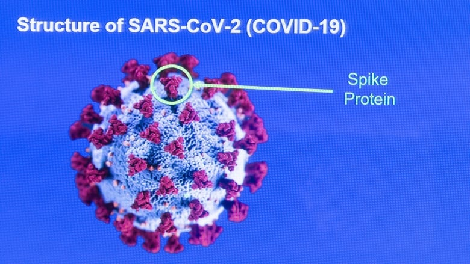

IDEAS AND DISCUSSION OF SCIENTISTS
FOREIGN SCIENTISTS
WHO(World Health Organization)
- The virus that causes COVID-19 is in a family of viruses called Coronaviridae. Antibiotics do not work against viruses.
- Some people who become ill with COVID-19 can also develop a bacterial infection as a complication. In this case, antibiotics may be recommended by a health care provider.
- There is currently no licensed medication to cure COVID-19.
BRITISH SCIENTISTS
- British scientists are investigating a mutation of the virus that causes COVID-19 that includes changes to the important "spike" protein.

- British scientists are trying to establish whether the rapid spread in southern England of a new variant of the virus that causes COVID-19 is linked to key mutations they have detected in the strain.
SINGAPORE SCIENTISTS
- They have discovered a new variant of the COVID-19 coronavirus that causes milder infections.The study showed that COVID-19 patients infected with a new variant of SARS-CoV-2 had better clinical outcomes, including a lower proportion developing low blood oxygen or requiring intensive care.
- Viruses tend to become less virulent as they mutate so as to infect more people but not to kill them as they depend on the host for food and shelter.
CHINEESE SCIENTISTS
- They said the spike protein is a critical genetic feature that is thought to enhance the virus’s ability to enter cells.
- Starting with the murky claim that SARS-CoV-2 is bad at infecting bats, therefore it could not have come from them.
But scientists point out that viruses are constantly evolving and passing between species.
The initial spillover from bats to humans could have happened decades ago, allowing the virus ample time for its spike protein, the part it uses to enter cells, to optimize through natural selection to infect humans.
RUSSIAN SCIENTISTS
- A study by Russian scientists has shown that water can almost completely destroy the novel coronavirus within 72 hours.
- The virus’ resilience is directly dependent on the water temperature – 90% of virus particles die in room temperature water in 24 hours and 99.9% within 72 hours,
according to a study by the State Research Center of Virology.
- They have studied that the virus can live in water in certain conditions, but it does not multiply in either sea or fresh water.
- The research found that the virus is unstable and most household disinfectants are effective against it.
- They found that ethyl and isopropyl alcohols of 30% concentration can kill up to a million particles of the virus in half a minute.
LOCAL SCIENTISTS
- Coronavirus is large in size where the cell diameter is 400-500 micron and for this reason any mask prevents its entry.
It usually settle on the surfaces due to its weight.
The virus lives on the hands for 10 minutes, so using an alcohol sterilizer to clean meets the purpose of prevention.
- They said if people wear masks the virus spread form victims to others wil stop.
- some ayurvedic doctors say this is one type of fever that was hold before 1000 of years and it has medicine